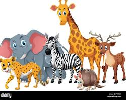

Meu primeiro post
Por: rychard lopes
Boas-vindas ao meu novo blog! Aqui vou compartilhar os animais.
O reino animal é incrivelmente diverso, englobando desde organismos microscópicos até gigantes como a baleia-azul. Para entender melhor esse universo, os animais são divididos em duas grandes categorias principais:

Invertebrados
- Insetos e Aracnídeos: Formigas, abelhas, aranhas e escorpiões.
- Moluscos e Crustáceos: Polvos, lulas, caranguejos e caracóis.
- Outros grupos: Águas-vivas, corais, minhocas e estrelas-do-mar.
Vertebrados
Possuem espinha dorsal e crânio, dividindo-se em cinco grupos principais:
- Mamíferos: Têm pelos, sangue quente e amamentam seus filhotes.
- Aves: Possuem penas, bico e põem ovos.
- Répteis: Cobertos por escamas, têm sangue frio.
- Anfíbios: Têm pele úmida e passam por metamorfose.
- Peixes: Vivem na água, respiram por brânquias.
Curiosidades do Mundo Animal
- Polvos têm três corações e sangue azul.
- Golfinhos chamam uns aos outros por "nomes".
- Flamingos nascem cinzas.
- Formigas nunca dormem no sentido tradicional.